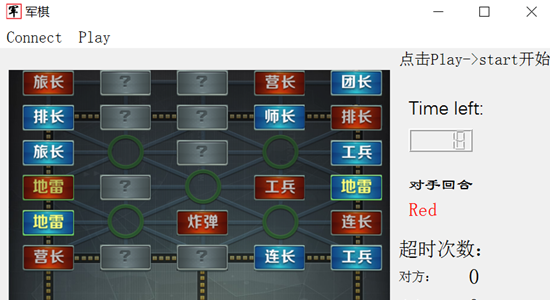

My Projects



I am a first-year Ph.D. student of UCLA following Prof. Quanquan Gu, mainly researching in optimization and architecture of Large Language Models. Previously I was a Yao Class Student in Tsinghua University advised by Prof. Zhilin Yang. And I was also a visiting student to University of Washington following Prof. Sheng Wang See my Blog, Github and LinkedIn.
TPA: Tensor Product is All You Need (NeurIPS 2025 Spotlight)
RPG: On the Design of KL-Regularized Policy Gradient Algorithms for LLM Reasoning
CodeGeeX: A Pre-Trained Model for Code Generation with Multilingual Benchmarking on HumanEval-X (KDD '23).
Kimi 1.5 project: Kimi k1.5: Scaling Reinforcement Learning with LLMs
In ByteDance AI Lab: The VolcTrans System for WMT22 Multilingual Machine Translation Task (WMT22)
In ByteDance Seed Team: MARS: Unleashing the Power of Variance Reduction for Training Large Models(ICML 2025).
T-Rex: A novel retrosynthesis prediction architecture integrating textual and graphic information
Capricorn: A multi-view diffusion model for enhancing Hi-C contact matrices (ISMB 2024 & Bioinformatics published).
Both in Prof. Sheng Wang's lab in University of Washington.
Name Liu Yifeng(Lewis Yik-fung Lau)
From Fuling, Chongqing, China
Major Computer Science and Engineering
Location Los Angeles
I won the gold medal in the 36th CPhO and obtained the Outstanding Award of Interdisciplinary Contest In Modeling(ICM). Also, I am the Excellent graduate of Tsinghua University and outstanding graduate of IIIS and has got the comprehensive awards of Tsinghua University in 2021, 2022 and 2023.
Besides research, I am also interested in topics of transportation, geography, linguistics and Vocaloid. I have learned accounting, economics and financing and I have experiences in quantitative trading, venture capital investment as well as enterprise financial management.
I am currently a Ph.D. student at UCLA AGI Lab following Prof. Quanquan Gu, researching on optimization and architectures of LLMs. I was previously a Yao Class Student from Tsinghua University researching on the fields of NLP following Zhilin Yang (Now CEO of Moonshot Inc.) and AI4Science following Prof. Sheng Wang as a visiting student in the University of Washington in 2023.
Besides research, I love traveling around and I am also fond of topics including transportation (subways/undergrounds/light rails, etc.), geography (especially Chinese geography), linguistics, Vocaloid (Hatsune Miku & IA in Japanese, Luo Tianyi in Chinese) as well as financing (VC investment etc.).
(I think, if you try to be friend of me) I am responsible, for which I was once elected as the monitor of Yao Class. And I am also sunny, optimistic as well as approachable.